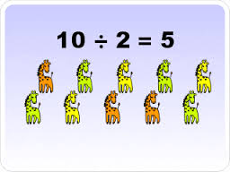

División, del latín divisio, es el accionar y el resultado de dividir (apartar, dosificar, distribuir, disgregar). En el ámbito de las matemáticas, la división es una operación de la aritmética donde se descompone una cifra.
La división matemática, por lo tanto, busca el valor denominado cociente, que representa la cantidad de veces que aparece un número (llamado dividendo) en otro (conocido como divisor), a través de un procedimiento estandarizado, el cual puede variar de acuerdo al país, aunque no significativamente. La división puede resultar exacta (si el resto es cero) o inexacta (cuando el resto es diferente a cero). Cuando la división es inexacta, quiere decir que el divisor no aparece contenido una cantidad de veces exacta en el dividendo, sino que queda un resto. Por ejemplo: 6 / 2 = 3 (“seis dividido dos es igual a tres”) es una división exacta.
| Inicio | Power by Aprendiz Sena 2017 |